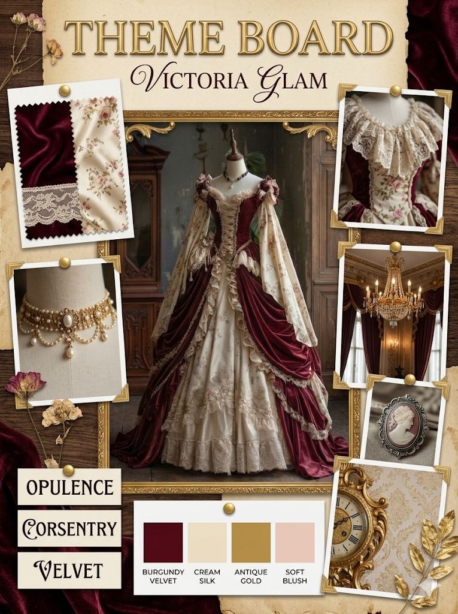
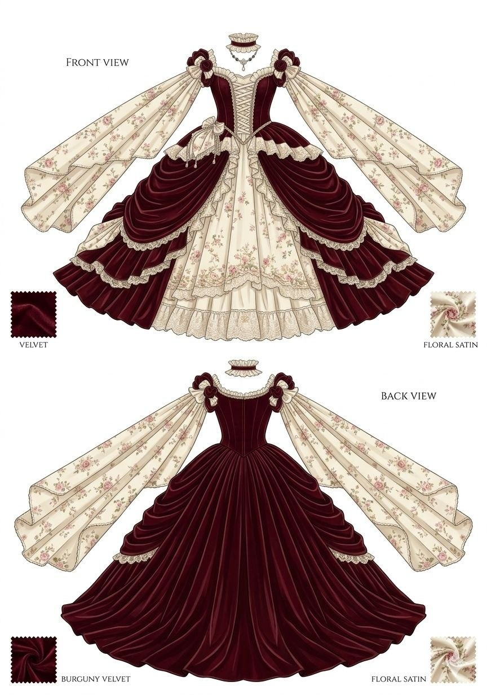
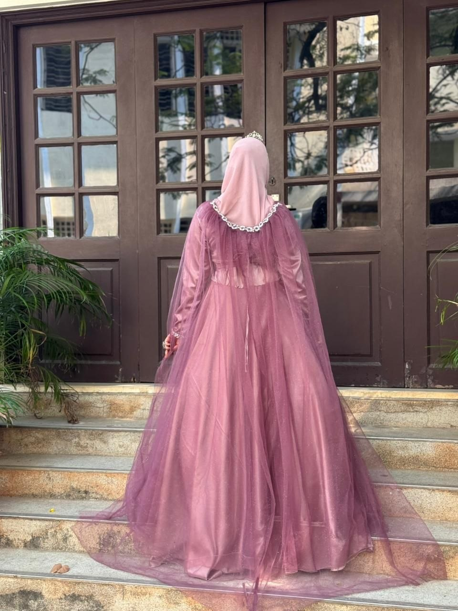
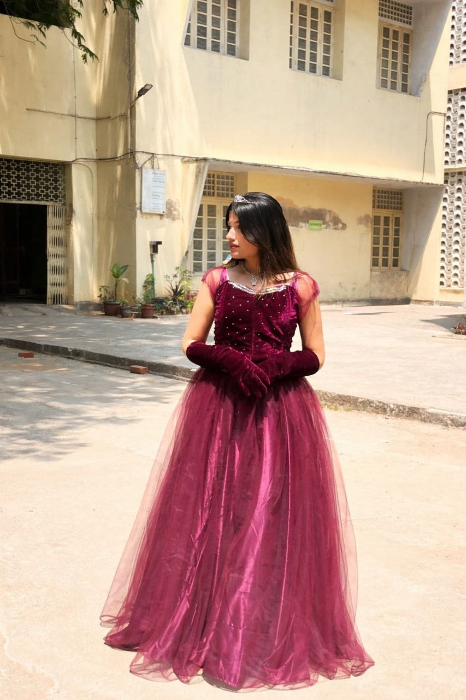
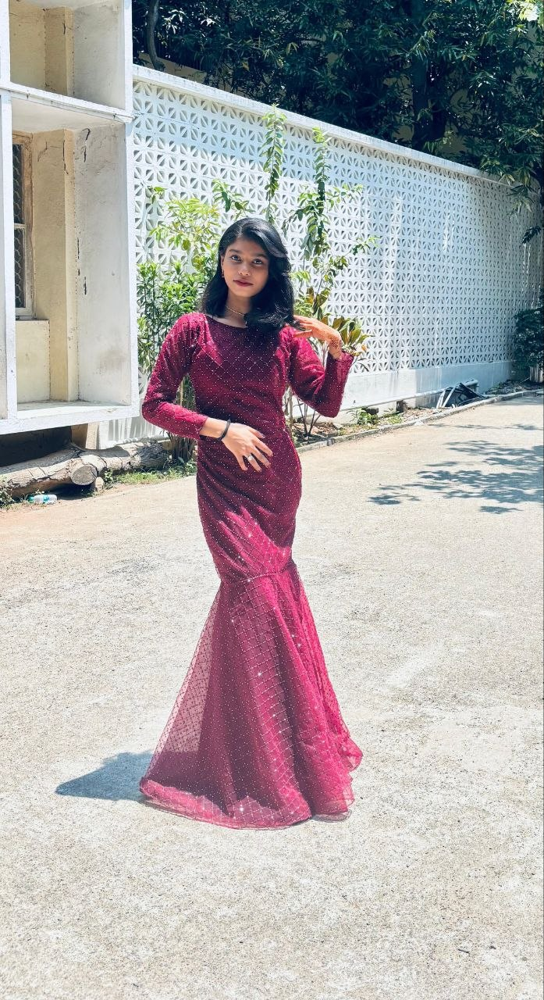

The Synthesis of Royalty





Academic Design I


Royal Victorian Heritage
This design serves as the cornerstone of the collection, exploring the rigid symmetry and tiered volume of 19th-century court dress. The primary objective was to synthesize traditional silk textures with modern industrial-grade finishing.
"The use of tiered layering in this garment is not merely aesthetic but a study in structural integrity and fabric weight distribution."
The technical illustration highlights the precision of the lace placement, while the moodboard reflects the historical references to the British aristocracy.
Academic Design II


Midnight Sparkle: Black Velvet
Exploring the luxury of high-contrast materials. This ballgown utilizes heavy black velvet for the bodice to provide a structural anchor for the ethereal sparkle tulle layers below.
"Luxury is found in the dialogue between the matte absorption of velvet and the dynamic reflection of sparkle tulle."


Academic Design III


The Lavender Blossom
A transition into romanticism. This gown emphasizes silver embroidery and delicate sheer layers. The silhouette is designed to catch light during movement, proving that heritage colors can feel radically contemporary.

Academic Design IV


Maroon Velvet Majesty
This piece represents the industrial construction standards of export-quality fashion. Featuring matching velvet gloves and a technical bodice construction, it focuses on the interplay of deep burgundy tones and structural volume.



Academic Design V


The Modern Mermaid
The final design in the story. A fusion of Victorian luxury and 21st-century silhouettes. The diamond mesh pattern overlay creates a dynamic play of light, proving that academic research in textiles leads to groundbreaking designs.
